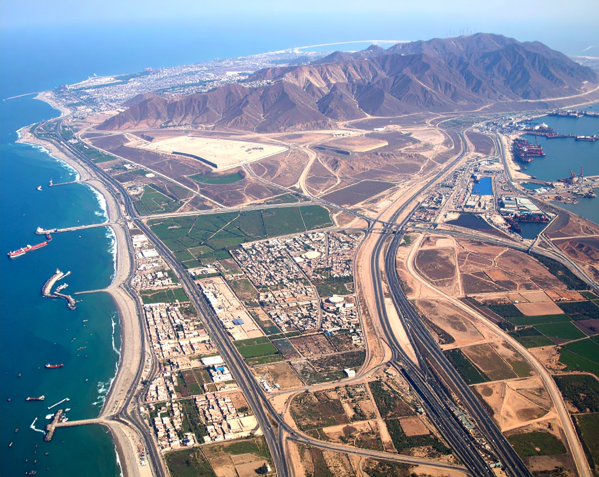

Business as Usual
El paisaje del Perú en 2060 es emblemático del impulso por el desarrollo económico a expensas de mejorar la sostenibilidad ambiental. La agricultura y las actividades extractivas se han expandido hasta dominar gran parte del país, exacerbando las tendencias indeseables de uso y ocupación del suelo, como la deforestación y la expansión urbana. Los impactos del cambio climático sobre la seguridad hídrica y alimentaria impulsan la migración de la población desde las regiones montañosas hacia las zonas costeras y amazónicas.

Características
Cambio climático: RCP 4.5
 Población: 39.81 millones para 2060
Población: 39.81 millones para 2060
Desarrollo económico: 1007 mil millones USD
 Perspectiva de valor sobre la naturaleza: Instrumental
Perspectiva de valor sobre la naturaleza: Instrumental
Áreas protegidas (proporción del Perú bajo protección): 25 % para 2030

Cambio de valores y estilos de vida
Como resultado de la pandemia de COVID-19 y la inestabilidad política de finales de la década de 2010, el Perú sigue priorizando el desarrollo económico por encima de la atención al cambio climático y la degradación ambiental. La naturaleza continúa viéndose principalmente como un recurso para el crecimiento económico, con escasa consideración por su valor intrínseco o su papel en la provisión de servicios ecosistémicos reguladores y de soporte necesarios para mantener la calidad de vida (1).
Si bien el desarrollo económico ha contribuido a aliviar algunas desigualdades sociales y económicas, las políticas sociales conservadoras siguen dejando importantes brechas en el acceso a servicios básicos y educación. Para 2060, el PIB per cápita alcanza aproximadamente 1007 mil millones USD (siguiendo SSP2, convertido a USD mediante paridad de poder adquisitivo (PPA) de 2017; (2)), lo que refleja un progreso económico robusto pero desigual. En consecuencia, la conciencia y responsabilidad ambiental siguen siendo limitadas para la mayoría de la población. Gracias a la mejora en el nivel de vida, la población crece a un ritmo moderado y llega a 39.81 millones en 2060. Esto, combinado con una elevada superficie habitacional per cápita y una tasa moderada de migración del campo a la ciudad (86.88 % de la población en zonas urbanas para 2060), hace que el área total de suelo destinada a asentamientos humanos se expanda considerablemente. Dado que la sostenibilidad no es una prioridad y la seguridad alimentaria se ha mejorado para la mayoría, no se produce un cambio de gran escala en los hábitos de consumo, lo que conlleva un aumento del consumo medio de carne. Además, siguen dominando modos de transporte privado poco sostenibles.
Cambio de prioridades económicas
El desarrollo económico continúa bajo el modelo extractivista actual, manteniendo la dependencia de actividades intensivas en recursos y emisiones (3). No obstante, la mayor estabilidad política a lo largo de la década de 2030 impulsa una mayor inversión extranjera. Esto permite a las empresas expandir poco a poco sus redes de producción internacionales, perfeccionar las cadenas de suministro, diversificar operaciones y aprovechar recursos globales. Este crecimiento incremental se apoya en acuerdos comerciales ya establecidos y en mejoras normativas graduales para aumentar la eficiencia y la rentabilidad, manteniendo la competitividad sin cambios drásticos respecto de las prácticas actuales1. Estos avances reducen la magnitud de la economía informal, aunque Lima-Callao sigue siendo la única metrópoli nacional y centro de actividades de servicios.
En los sectores primarios se adopta de forma moderada nuevas tecnologías, aunque dirigidas a mejorar la producción y no necesariamente la sostenibilidad (4). Este proceso es asimétrico: las grandes empresas tienen mucho más éxito en la adopción tecnológica, mientras que las pequeñas y medianas carecen de capacidad.
En agricultura continúa la transición de la subsistencia a la producción comercial, impulsada por la demanda del mercado de exportación. Esto aumenta la intensificación agrícola y el cultivo de especies no nativas como fresas, espárragos y arándanos. También se amplía la superficie destinada a la ganadería para satisfacer la demanda de carne, de modo que el área agrícola crece de forma notable y con mayor intensificación. A la vez se pasa de la pesca artesanal a la industrial y se expande la acuicultura.
El alza de los precios internacionales de minerales, en especial el cobre, impulsa la expansión continua de la minería, concediéndose más licencias con poca atención a la sostenibilidad. La débil ejecución normativa y la legislación ambiental laxa favorecen altas tasas de explotación, mientras persiste la minería ilegal a pequeña escala. Se mantiene el modelo de turismo masivo intensivo en carbono (5), centrado en atracciones convencionales y contribuyendo al sobre-turismo en áreas concretas sin esfuerzos relevantes para reducir el impacto ambiental.
Comunidades indígenas
Pese a que en algunas regiones existen derechos formales de tenencia de la tierra, la débil aplicación de la ley deja a las comunidades indígenas vulnerables al acaparamiento de tierras y la explotación de recursos. Persisten las desigualdades sociales, limitando el acceso a servicios básicos y a oportunidades económicas. Aunque el valor del conocimiento indígena se reconoce en algunos marcos de política, sigue marginado en la toma de decisiones, reduciendo su influencia en la conservación y el desarrollo (6). La falta de voluntad política para reforzar los derechos sobre la tierra y las estructuras de gobernanza excluye aún más a estas comunidades de las políticas que afectan a sus territorios y medios de vida (7).
Gobernanza, planificación y gestión de recursos
La escasa coordinación institucional entre niveles de gobierno y sectores sigue dificultando políticas coherentes (8). La participación pública se limita a consultas simbólicas y los procesos decisorios carecen de transparencia (9). Aun así, la mayor estabilidad política mejora tímidamente la confianza pública en el Estado.
En general, mejora la planificación del uso del suelo y cada departamento completa planes de Zonificación Ecológica y Económica (10). Sin embargo, la planificación sigue siendo sobre todo reactiva y susceptible de captura por actores económicos, permitiendo a veces desarrollos en áreas ecológicamente sensibles en contradicción con esos planes. Esto es especialmente cierto para la expansión urbana, que continúa informalmente debido a la migración hacia zonas de mayor actividad económica y a los impactos del cambio climático.
La reforma de 2023 de la ley forestal no se revoca, y la política se centra en ganancias económicas a corto plazo2. Las concesiones existentes priorizan la producción de madera, aunque aumenta la cantidad y tamaño de proyectos de créditos de carbono basados en bosques que ayudan a reducir la deforestación (11). Sin embargo, la orientación del sector y la ejecución normativa débil permiten la conversión de bosque a agricultura por pequeños agricultores. Junto con la concesión de áreas mineras en terrenos boscosos, esto genera una tendencia continua de pérdida y degradación forestal hasta 2060.
3 https://observatorio.ceplan.gob.pe/ficha/o17_2024
4 https://observatorio.ceplan.gob.pe/ficha/o6_2024
La infraestructura de transporte se centra sobre todo en mejorar carreteras, reforzando conexiones y calidad de redes sin dar mucha importancia a los impactos ecológicos. Se amplía especialmente la infraestructura de exportación (puertos e instalaciones de procesamiento de productos agrícolas y mineros) en regiones costeras septentrionales y meridionales3. La infraestructura de comunicaciones mejora, pero el acceso a servicios digitales sigue siendo desigual (12). Para hacer frente a la mayor intensidad y gravedad de los desastres naturales, se apuesta por infraestructuras más resilientes4, basadas en mejoras de ingeniería más que en Soluciones basadas en la naturaleza.
La planificación y gestión inadecuadas de los recursos hídricos, junto con el cambio climático global de alta intensidad (RCP 4.5 / RCP 6.0), agravan los problemas de inseguridad hídrica. La disminución pronunciada de los glaciares reduce la disponibilidad y calidad del agua en zonas montañosas y obliga a la población a migrar hacia la costa. Dada la mayor demanda de agua en agricultura, se requieren soluciones tecnológicas costosas, como plantas desalinizadoras.
Restauración y protección ecológica
La falta de apoyo político y social impide ampliar las áreas de conservación más allá de la cobertura actual del 17.88 %, por lo que el Perú no cumple su compromiso internacional de proteger el 30 % del territorio nacional para 2030. Los programas para frenar la pérdida de biodiversidad se ven obstaculizados por prioridades sectoriales contrapuestas y la escasa integración de objetivos de sostenibilidad a largo plazo. Los esfuerzos de restauración ambiental son mínimos y obedecen principalmente al cumplimiento normativo. Las áreas degradadas suelen destinarse a plantaciones monoespecíficas o a la expansión urbana, profundizando la pérdida de hábitats y la degradación de los ecosistemas (13).